Send Money to Another Financial Institution on the Mobile App
This guide is designed to show you how to complete a transfer from your CW accounts to accounts at another Financial Institution.
1
Tap "Move Money"
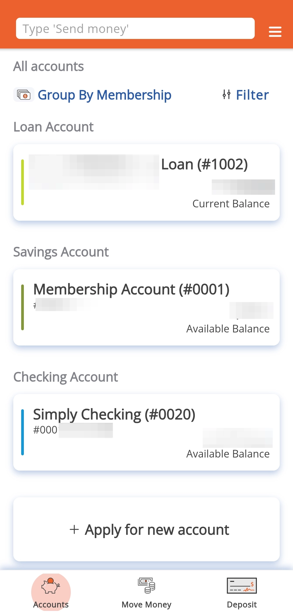
2
Tap "External Transfers and Payments"
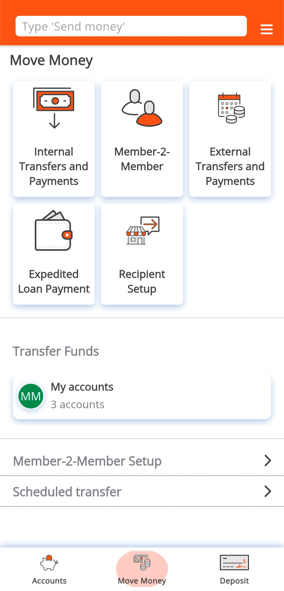
3
Tap "Make a Transfer"
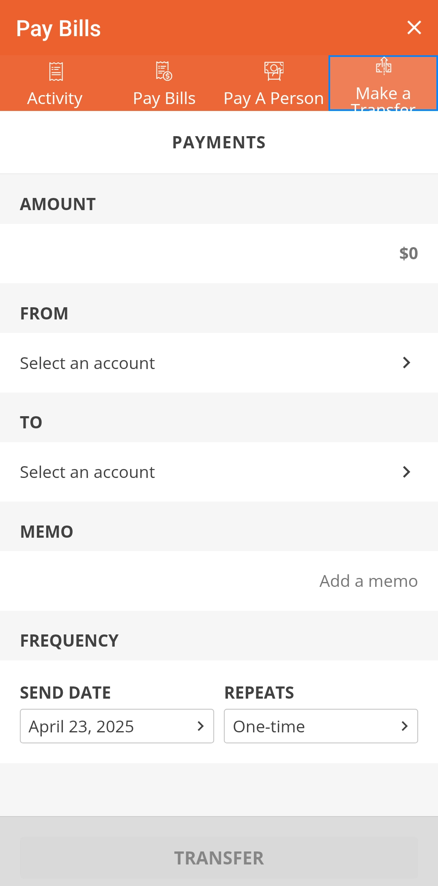
4
Select the account to send money from.
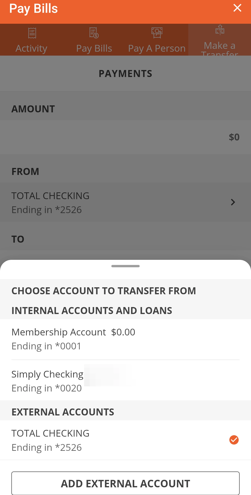
5
Select the account to send money to.
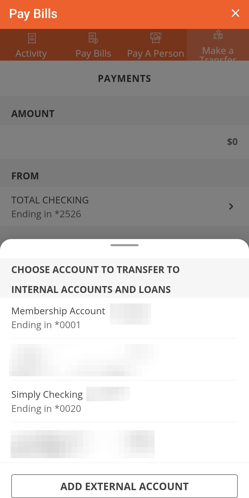
To add an external account, tap Add External Account.
6
Search for the institution.
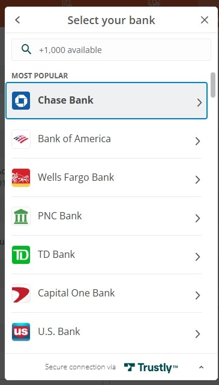
7
You will be prompted to login to your institution to verify.
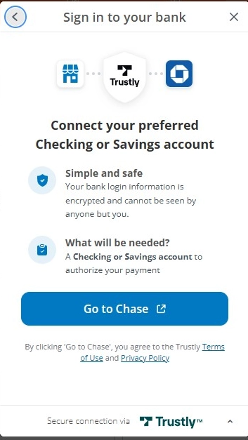
8
If you cannot find your institution, then you can enter in the account details manually
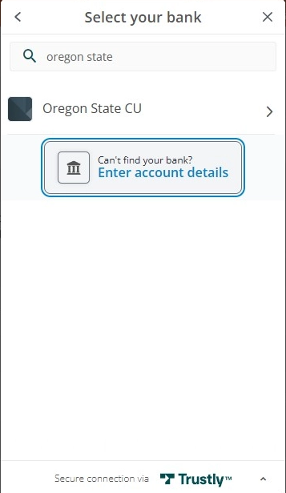
9
Fill out the required information
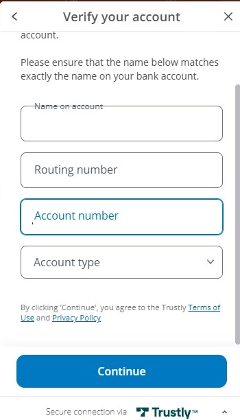
10
Tap "Continue"
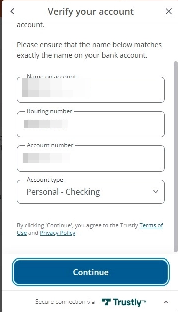
11
A confirmation message will pop up.
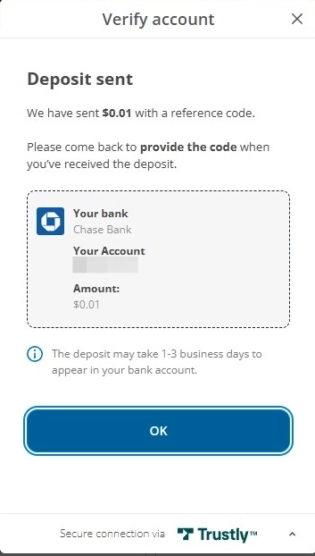
12
A code will be inside the transaction details once the transaction arrives at your other Financial Institution. It is a four-digit code and may appear differently than below depending on your Financial Institution.
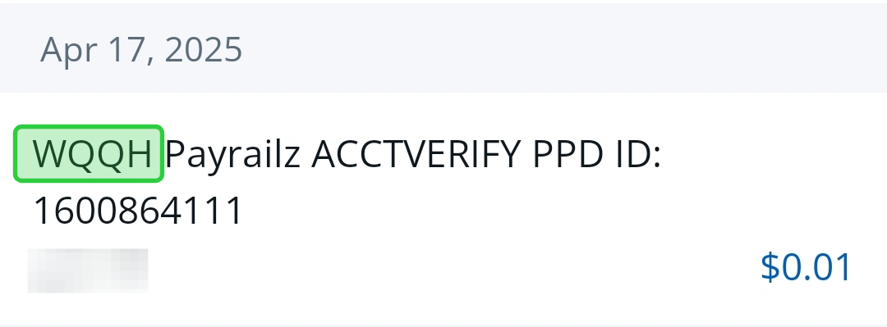
13
Enter the amount, choose the "From" and "To" accounts, confirm the date, then tap "Transfer"
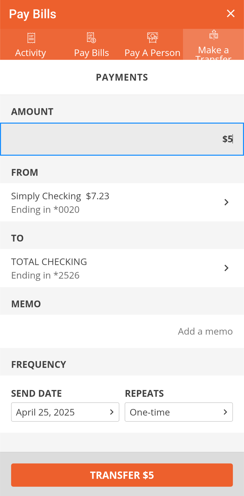
The frequency section lets you schedule transfers to automatically go out daily, weekly, monthly, etc.